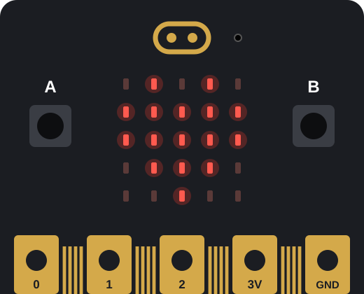

Physical computing
micro:bit
The micro:bit is a pocket-sized computer designed for learning. It has a grid of LED lights, buttons, a speaker, a microphone and built-in sensors that detect motion, direction, light and temperature. It can also talk to other devices by radio and Bluetooth.
Teens program it with drag-and-drop blocks, JavaScript or Python to build things like step counters, games and wearable AI that recognizes their movements.
- Coding
- Electronics
- Sensors
- AI / machine learning